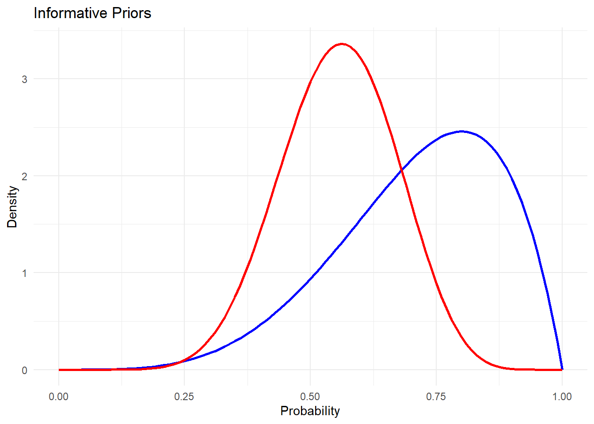
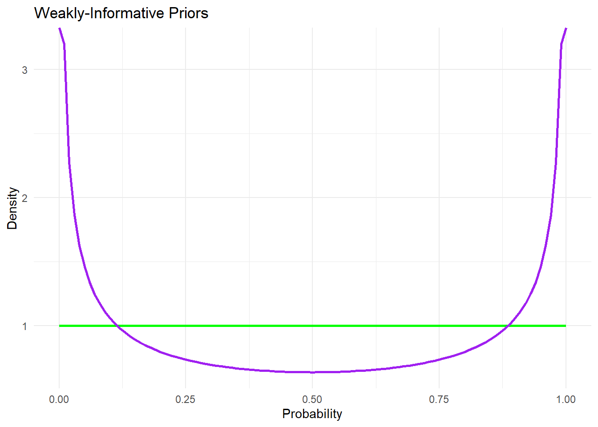
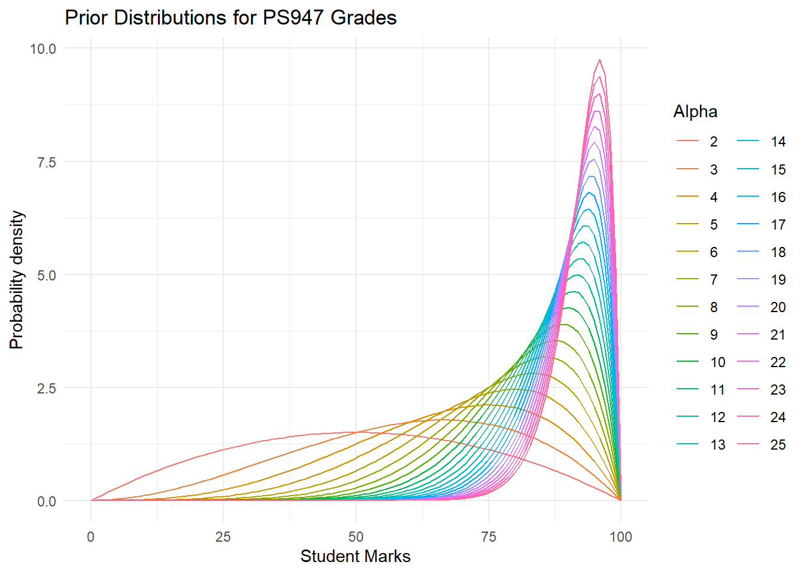

Call:
glm(formula = RecommendationFollowed ~ Mode + Competent + Intelligent +
Thoughtful + CompositeIntellect, family = binomial, data = data)
Coefficients:
Estimate Std. Error z value Pr(>|z|)
(Intercept) -1.979e+00 2.011e-01 -9.841 < 2e-16 ***
ModeVisual -6.761e-01 1.124e-01 -6.017 1.77e-09 ***
Competent -8.813e+06 7.041e+07 -0.125 0.9
Intelligent -8.813e+06 7.041e+07 -0.125 0.9
Thoughtful -8.813e+06 7.041e+07 -0.125 0.9
CompositeIntellect 2.644e+07 2.112e+08 0.125 0.9
---
Signif. codes: 0 '***' 0.001 '**' 0.01 '*' 0.05 '.' 0.1 ' ' 1
(Dispersion parameter for binomial family taken to be 1)
Null deviance: 2166.0 on 1571 degrees of freedom
Residual deviance: 2001.3 on 1566 degrees of freedom
AIC: 2013.3
Number of Fisher Scoring iterations: 4Homework 3
The Effect of Recommendation on Choice
2.1 Fitting the model and explanation.
- We need a model to explain the effect of mode(auditory, visual) and other variables in following recommendations.
- A logistic regression is used because the response variable is a binary output that is; whether a recommendation is followed or not (1,0).
- The response variable here is recommendation followed and this is a binary data (yes/no)
- In the first model, all the variables are used to see how much each of them explains the response variable and their corresponding levels of significance.
- We use the composite intellect for the second model as it is a composite measure of perceived intellect using the ratings of competence, intelligence and thoughtfulness, this avoids the risk of multicollinearity in the model. The other variable is the mode (visual,auditory)
- The second model is used to see how much of the variance of the model is explained by the significant variables from the previous model. In our model it is, the mode and the composite intellect.
- Fit the logistic regression model 1.
Here, the mode is the only variable that has significance.
Fit the logistic regression model 2.
Call:
glm(formula = RecommendationFollowed ~ Mode1 + CompositeIntellect,
family = binomial, data = data)
Coefficients:
Estimate Std. Error z value Pr(>|z|)
(Intercept) -1.95527 0.19742 -9.904 < 2e-16 ***
Mode1Visual -0.73130 0.10963 -6.670 2.55e-11 ***
CompositeIntellect 0.39219 0.03567 10.994 < 2e-16 ***
---
Signif. codes: 0 '***' 0.001 '**' 0.01 '*' 0.05 '.' 0.1 ' ' 1
(Dispersion parameter for binomial family taken to be 1)
Null deviance: 2166.0 on 1571 degrees of freedom
Residual deviance: 2006.7 on 1569 degrees of freedom
AIC: 2012.7
Number of Fisher Scoring iterations: 4- Here the mode and the composite intellect are significant.
- Here the intercept -1.96 represents log-odds of following recommendations when all other predictor variables are held constant at zero.
- The coefficient of Mode1Visual, which is approximately -0.73, signifies that while holding all other predictor variables constant, receiving the recommendation visually is associated with a decrease in the log-odds of following the recommendation by approximately 0.73 units compared to receiving it through auditory mode.
- The coefficient of Composite Intellect, which is approximately 0.39, indicates that while holding all other predictor variables constant, for every one-unit increase in composite intellect, there is an expected increase of approximately 0.39 units in the log-odds of following the recommendation.
- This implies that higher levels of composite intellect are associated with higher odds of following the recommendation, assuming all other factors remain constant.
2.2 Assessment of whether there is evidence for recommendation mode affecting choice
- To understand the probability of following recommendation after switching from auditory to visual mode.
- We use marginal effects to know the probability of following recommendation with respect to the modes.
Please note: The marginal effects is running for R script but there is an error in quarto file. The codes used are as follows:
install.packages(‘margins’)
library(margins) summary(margins(model_1)) for (i in (1:9)) { print(summary(margins(model_1, variables = “CompositeIntellect”, at=list(CompositeIntellect=i)))) }
The marginal effect of ‘Mode’ being visual (compared to auditory) on the probability of “following the recommendation” is approximately -0.16.
While keeping all the other variables constant, people who received recommendation through visual mode is expected to have a 16 percentage decrease in the probability of following the recommendation when compared to the auditory mode.
The composite intellect is higher in the range of 5-7, indicating that for both visual and auditory mode the composite intellect was taken into account when following recommendation. That is, the composite intellect of auditory is more than the visual. It also increases with probability of following recommendation.
Higher the recommender’s composite intellect, higher the probability for the recommendation made to be followed.
2.3 Distinction Material
- The table clearly shows that recommendations are followed more when the mode of recommendation is auditory and the recommendation are less likely to be followed when the mode of recommendation is visual.
- The previous analysis also provides us with the data that the mode of recommendation is not the best predictor of the recommendations being followed.
- As the composite intellect is the composite measure of perceived intellect using the ratings of competence, intelligence and thoughtfulness, this can represent the combination of these datas.
- Individually the variables;competence, intelligence and thoughtfulness are weak. But when composite intellect is taken into account, it shows more significance.
- There is a stronger relationship between the Composite intellect and recommendation followed.
- There is an increase in recommendation followed with every unit increase in composite intellect.
- This suggests that composite intellect plays an important role in predicting the following of recommendation.
- As the figure represents, the auditory mode is higher than the visual mode, for recommendation being followed.
- With this evidence, we can conclude that the composite intellect with auditory mode has more probability of following recommendation when compared to visual mode with composite intellect.
Auditory Visual
0 383 475
1 405 309
Selecting appropriate priors
3.1 Beta Distribution with alpha and beta
The parameters used in a beta distribution are alpha and beta.
The alpha parameter is the shape parameter that controls the skewness of a beta distribution.
The beta parameter is the shape parameter that controls the spread of a beta distribution.
The changes that needs to be made to the dependent variables are,
- to standardise the data, so that mean=0 and SD=1 ; This is a common preprocessing step to ensure that the data is on a consistent scale.
- convert the parameters into alpha and beta using the following equation:
alpha <- (mu^2 * (1 - mu) / sigma^2 - mu) / (mu - 1)
beta <- alpha * (1 - mu) / mu
where, mu=mean, sigma^2= standard deviation
3.2 Example of a beta distribution plot with alpha=10 beta=8
- The approximate range of the scores is 40%-60%.
- The plot has a peak near the range of 60.

3.3 Setting Informative and Weakly Informative Priors
- To create a set of informative and a set of weakly-informative priors for the parameters in our model.
- The informative priors taken are alpha (5,10) and beta(2,8). These priors give an approximate estimation of possible probability distribution of marks.
- The weakly informative priors taken are alpha (1,0.5), beta(1,0.5). These priors are not representing the possible outcomes.


3.4 Creating some prior predictions
- Here the prior predictions are made with 23 alpha values and 1 fixed beta value.
